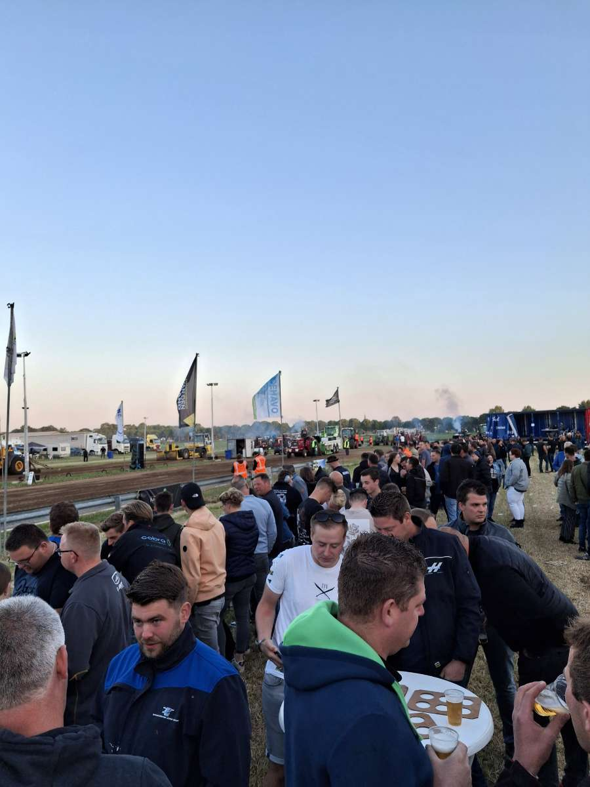
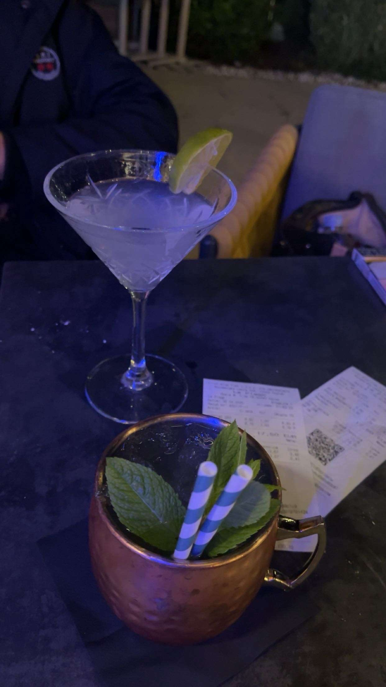
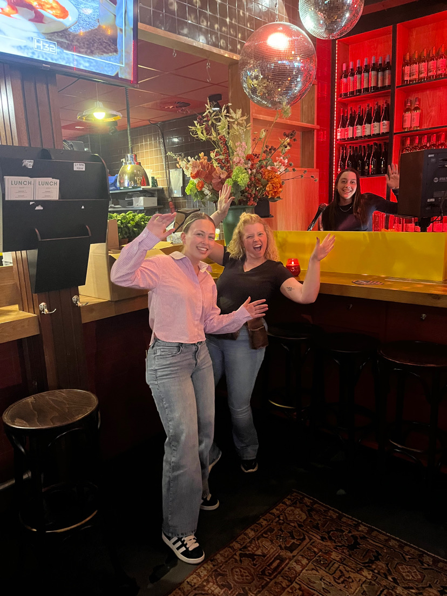
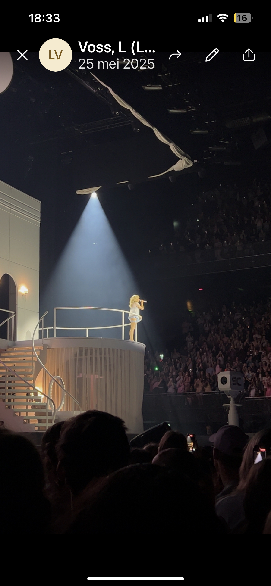
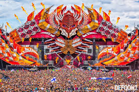
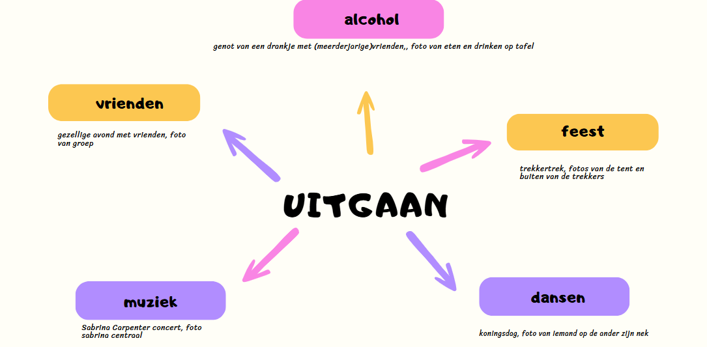

Photo 1
This photo was taken during Trekentrek in Oss, a big event where people come together to celebrate and dance. In the picture you can see a big tent that is absolutely packed with people. Bright yellow, pink, and blue lights lighten the space and create a fun sphere, and in the back, a DJ plays music from a small stage. Everyone in de crowd seems to keep themselves entertained, either by dancing, talking, or just vibing. I think this photo captures the pure joy of being surrounded by music, people and energy. It’s loud and chaotic in the best way possible. With this photo we want to show how alive a night out feels, where you forget everything else and just live in the moment. It’s not just about partying; it’s about connection, freedom, and feeling completely present.
Photo 2
This photo shows two drinks on a black table on a terrace of a bar. One is in a margarita, and the other is a moscow mule. Next to the drinks are the receipts, and you can see a sillouette of a friend in the background, sitting across from the camera. The photo was taken at night time, that's why the light is soft and has a blue tint to it, with a calm and quiet vibe. This photo is about enjoying the slower side of life. This is exactly what you need after a long week: to sit with friends, sipping on cocktails and catching up. It’s very simple but very real. It’s a small and peaceful scene that says a lot about connection and being present in the moment.
Photo 3
This photo taken at H32 in Oss beautifully captures the energy of a fun night out with friends. The composition centers on three smiling people, naturally posed with expressive gestures that radiate joy. The bartender in the background, also smiling and waving, adds a sense of connection between staff and guests, making the scene feel warm and welcoming. The lighting plays a big role in setting the mood, a mix of soft, warm tones from overhead fixtures and red ambient lighting from the back wall creates an inviting and slightly festive atmosphere. The disco balls overhead reflect the light subtly, adding sparkle without overwhelming the frame. The bright yellow bar provides a bold visual contrast, drawing your eye toward the center of the image. Together, the lighting and layout give the scene depth, vibrancy, and a feeling of spontaneity. It’s a perfectly captured slice of a carefree evening, real, joyful, and full of life.
Photo 4
This photo, taken during Sabrina Carpenter’s concert in Amsterdam, captures a moment of pure stage magic. Bathed in a single spotlight, she stands poised on a circular platform, her silhouette radiant against the dark arena. The crowd below fades into shadow, their presence felt more than seen, all eyes fixed on the glowing figure center stage. The set design with its soft curves, pastel lighting, and elegant stairway gives the performance a dreamlike quality, almost theatrical in its intimacy. The composition draws you upward, from the heads of the crowd to the spiral staircase and finally to Sabrina herself, illuminated in the beam like a star. The lighting design here is intentional and impactful: minimal but powerful, isolating her voice and presence in a moment of stillness amidst the electric energy of a packed venue. It’s a photo that speaks to the magic of live music, a single moment that feels both massive and deeply personal
Photo 5
The photo shows an impressive float during the Bloemencorso Zundert, the largest dahlia parade in the world. The float is entirely covered with colorful dahlias and depicts a giant fantasy figure. Volunteers are pushing the float through the streets of Zundert, while spectators watch along the route. In the background, trees and houses emphasize the village atmosphere. This photo evokes a sense of pride and community spirit. The Bloemencorso Zundert is all about creativity, collaboration, and tradition. Each year, twenty neighborhoods work together for months to create these artworks, highlighting the strong social bonds within the community. The bright colors and detailed designs of the floats showcase the passion and dedication of the participants. This festival celebrates not only flowers but also the power of cooperation and cultural identity.
Infographic
